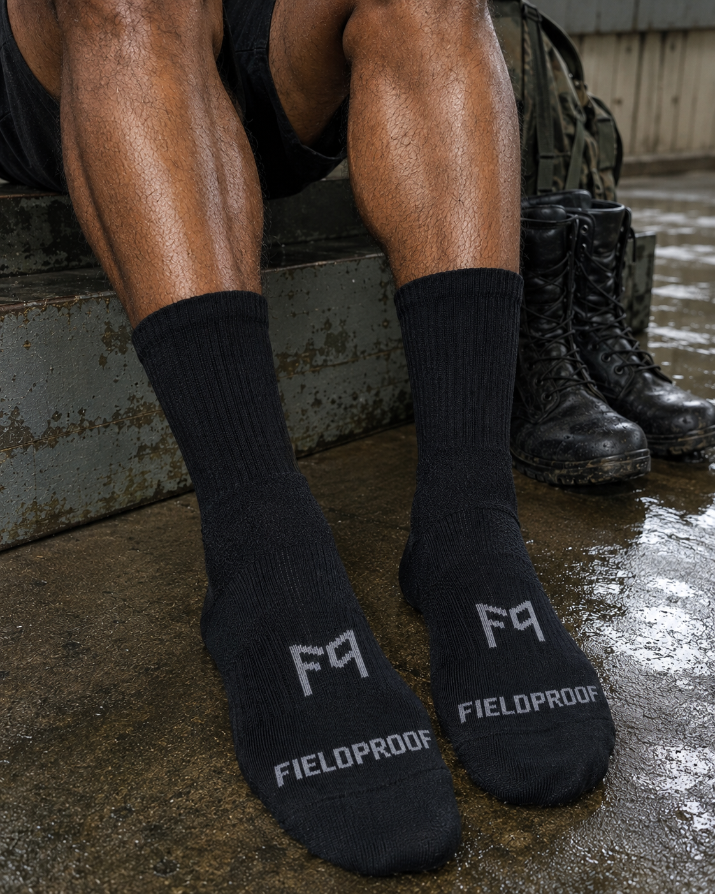

About Fieldproof
One problem, done properly
Fieldproof is a small Singapore-based team obsessed with a single problem: what tropical field conditions do to feet. We started with the hardest sock to get right — the one worn inside a boot, in this heat, for hours — and we won't move on until it's right.
Enlisting soon, or know someone who is? A pack of Fieldproof socks is the field gift that actually gets used.
